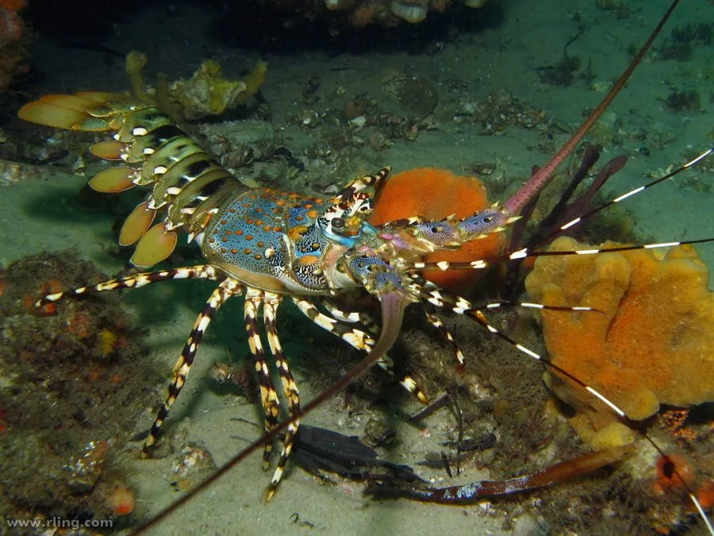

甲壳动物 · 动物界
锦绣龙虾 Panulirus ornatus

体表布满绚丽花纹的大型龙虾，没有大螯，靠粗壮触角御敌，是印度洋—太平洋温暖海域价格昂贵的名贵海产。
- 分类
- 门节肢动物门纲软甲纲目十足目科龙虾科属龙虾属
- 栖息环境
- 热带珊瑚礁、岩礁与海草床，白天藏身礁缝
- 地理分布
- 印度洋—西太平洋热带海域，包括中国南海和澳大利亚北部
- 保护级别
- 暂无评估
物种志
锦绣龙虾体长通常 30–40 cm，最大记录超过 60 cm、重 5 kg 以上。头胸甲和腹部布满浅蓝、绿、褐交织的斑纹，色彩如织锦，锦绣之名由此而来；第二对触角极长，基部有粗大的棘刺，步足上没有大螯。
它夜行性，白天躲在珊瑚礁和岩礁的缝隙、洞穴中，夜间外出觅食贝类、海胆、蠕虫和腐肉。锦绣龙虾没有大螯，遇到危险时用带刺的触角抽打敌人，还能摩擦触角发出声响。幼体和成体常在礁区活动，有时会列队迁移。雌虾把卵产在腹下，抱卵孵化。锦绣龙虾分布在日本南部、东南亚、澳大利亚北部和中国南海等印度洋—太平洋热带海域，是名贵的食用龙虾，因捕捞压力大而价格高昂；目前主要依靠捕捞，人工养殖难度较大。
形态与习性
- 食性贝类、海胆、蠕虫和腐肉，夜间觅食
- 体长通常 30–40 cm，最大可达 60 cm 以上
- 寿命可达十余年
- 防御无大螯，靠粗壮触角棘刺和摩擦发声自卫
- 繁殖雌虾产卵后抱卵于腹下
- 经济名贵食用龙虾，捕捞和养殖价值高
趣味知识
- 锦绣龙虾是色彩最艳丽的龙虾之一，斑纹像织锦，名字由此而来。
- 它没有大螯，遇到危险时用带刺的触角抽打敌人，还能摩擦发声。
- 锦绣龙虾可以列队迁移，一只跟着一只在海底前进。